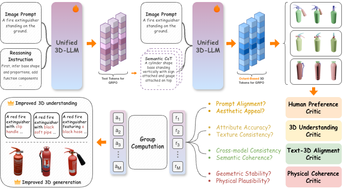
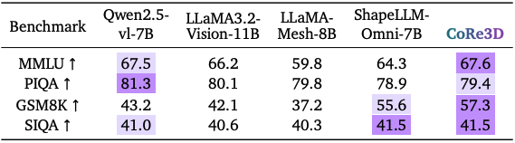
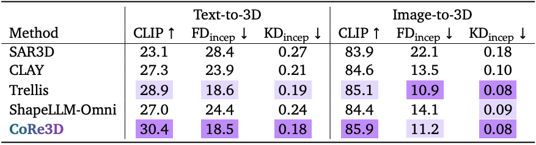

CoRe3D: Collaborative Reasoning as a Foundation for 3D Intelligence
Abstract
Recent advances in large multimodal models suggest that explicit reasoning mechanisms play a critical role in improving model reliability, interpretability, and cross-modal alignment. While such reasoning-centric approaches have been proven effective in language and vision tasks, their extension to 3D remains underdeveloped. CoRe3D introduces a unified 3D understanding and generation reasoning framework that jointly operates over semantic and spatial abstractions, enabling high-level intent inferred from language to directly guide low-level 3D content formation. Central to this design is a spatially grounded reasoning representation that decomposes 3D latent space into localized regions, allowing the model to reason over geometry in a compositional and procedural manner. By tightly coupling semantic chain-of-thought inference with structured spatial reasoning, CoRe3D produces 3D outputs that exhibit strong local consistency and faithful alignment with linguistic descriptions.
CoRe3D Architecture
Semantic-Level Representation. A core challenge in 3D generation is translating open-ended language into structured reasoning signals that preserve compositional semantics and physical constraints. Directly mapping prompts into latent 3D tokens is under-specified, as language descriptions typically omit precise geometric, relational, and material cues, resulting in generated shapes that capture coarse appearance but fail to recover consistent structure or texture details. To address this gap, we introduce a semantic CoT reasoning stage that expands each textual prompt into an explicit structural plan before geometry generation. Given an input description and an optional reasoning instruction, the unified 3D-LLM first produces a detailed natural language description of the object category, spatial layout, materials, and appearance details. This description serves as an interpretable, text-based scaffold that anchors the subsequent geometric reasoning process.
Geometric-Level Representation. We represent each 3D object using a 643 voxel grid, which provides a balanced trade-off between spatial fidelity and computational efficiency. To obtain a compact token representation, a 3D VQ-VAE encoder maps the voxel grid to a 163 latent grid, preserving local geometry and appearance features. The latent grid is serialized into 4096 latent vectors, each corresponding to a spatial location. To further reduce sequence length, we group every 2×2×2 neighborhood of latent voxels (eight adjacent cells) by concatenating their channels into a single vector. This operation transforms the 4096 latent vectors (with 8-D channels) into 512 tokens with 64-D channels, where each token represents a local octant block within the 3D volume.
The core innovation of our framework lies in the explicit collaboration between semantic and geometric reasoning. While each level can operate independently, its joint optimization leads to stronger, mutually reinforcing behavior. We unify them through 3D Co-GRPO, a reinforcement learning framework that refines both reasoning levels using multi-critic 3D-aware rewards, aligning linguistic intent with spatial construction. This results in objects that are semantically faithful, visually compelling, and physically coherent.
Rendered GLBs:
Quantitative Results
Evaluation of general conversational and reasoning abilities on standard language benchmarks. We compare CoRe3D against top-tier general vision-language models (VLMs) and 3D-specific language models. Our model demonstrates SoTA or competitive language understanding and reasoning performance. Best and second-best are highlighted.

3D object captioning results on the Objaverse benchmark. We evaluate the model’s 3D caption capability. CoRe3D achieves state-of-the-art performance by a significant margin across all n-gram and semantic similarity metrics, demonstrating that our reasoning-driven generative training directly enhances 3D understanding. Best and second-best are highlighted.
Quantitative comparison of 3D generation quality for Text-to-3D and Image-to-3D tasks. We evaluate CoRe3D against state-of-the-art generative models. Results show competitive performance on all metrics for both tasks. Best and second-best are highlighted.
Qualitative Results
Qualitative results of CoRe3D on challenging prompts that require inferring the correct object or interpreting implicit descriptive cues. Our co-reasoning framework is the first one that can reason such challenging text prompts.
Image-to-3D qualitative comparison. Given a single input image, CoRe3D produces 3D shapes with higher geometric fidelity, cleaner topology, and stronger semantic alignment compared to baselines.

Text-to-3D qualitative comparison. CoRe3D generates 3D objects that more faithfully follow the textual prompt.
Qualitative results on 3D part editing. The collaborative reasoning in our framework enhances instruction comprehension, yielding edits that align more faithfully with the input text and produce 3D shapes that accurately reflect the specified modifications.
BibTeX
@article{yu2025core3d,
title={CoRe3D: Collaborative Reasoning as a Foundation for 3D Intelligence},
author={Yu, Tianjiao and Li, Xinzhuo and Shen, Yifan and Liu, Yuanzhe and Lourentzou, Ismini},
journal={arXiv preprint arXiv:2512.12768},
year={2025}
}